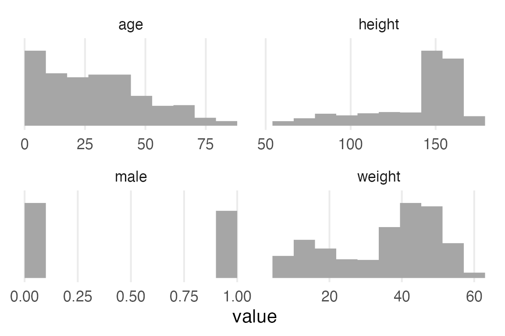

library(tidyverse)
library(ggdist)
library(ggblend)
library(here)
source(here("_defaults.R"))
Listening
Loading
Finessing the model diagram
I think I’ve improved on the model diagram from the last post. Some things I’m still struggling with:
Formatting the node text. Can’t seem to get either html nor markdown formatting to work.
The background color on edge labels is absent, making the “~” illegible.
flowchart TD
subgraph exp2["Exp"]
one2["1"]
end
exp2 -.-> sigma4
subgraph normal4["normal"]
mu4["μ=0"]
sigma4["σ"]
end
normal4 -.-> Gamma[γj]
Gamma --> gamma1
subgraph normal3["normal"]
mu3["μ=0"]
sigma3["σ=10"]
end
normal3 -.-> beta1
subgraph normal2["normal"]
mu2["μ=0"]
sigma2["σ=10"]
end
normal2 -.-> beta0
subgraph sum1["+"]
beta0["β₀"]
subgraph mult1["×"]
beta1["β₁"]
x["xᵢ"]
end
gamma1["γj[i]"]
end
sum1 --> mu1
subgraph exp1["Exp"]
one1[1]
end
exp1 -.->|"~"| sigma1
subgraph normal1["normal"]
mu1["μᵢ"]
sigma1["σ"]
end
normal1 -.->|"~"| y["yᵢ"]flowchart TD
subgraph exp2["Exp"]
one2["1"]
end
exp2 -.-> sigma4
subgraph normal4["normal"]
mu4["μ=0"]
sigma4["σ"]
end
normal4 -.-> Gamma[γj]
Gamma --> gamma1
subgraph normal3["normal"]
mu3["μ=0"]
sigma3["σ=10"]
end
normal3 -.-> beta1
subgraph normal2["normal"]
mu2["μ=0"]
sigma2["σ=10"]
end
normal2 -.-> beta0
subgraph sum1["+"]
beta0["β₀"]
subgraph mult1["×"]
beta1["β₁"]
x["xᵢ"]
end
gamma1["γj[i]"]
end
sum1 --> mu1
subgraph exp1["Exp"]
one1[1]
end
exp1 -.->|"~"| sigma1
subgraph normal1["normal"]
mu1["μᵢ"]
sigma1["σ"]
end
normal1 -.->|"~"| y["yᵢ"]
Here’s the global water model. I’ll replace the \(\mathcal{U}(0,1)\) prior with the equivalent beta distribution, just for the consistency of going beta -> binomial/bernoulli. I’ll also notate the beta distribution with mean and precision.
\[ \mathcal{U}(0,1) = \text{Beta}(a=1, b=1) = \text{Beta}(\mu=0.5, \phi=2) \]
because
\[ a = \mu\phi \]
\[ b = (1-\mu)\phi \]
flowchart TD subgraph beta1["beta"] mu["μ=0.5"] phi["ϕ=2"] end beta1 -.-> p subgraph binomial1["binomial"] N p end binomial1 -.-> W
Height data
{cmdstanr} is a dependency for {rmcelreath/rethinking}, and I don’t want to deal with that right now, so I’m just going to read the data from github.
read_delim(
"https://raw.githubusercontent.com/rmcelreath/rethinking/master/data/Howell1.csv",
delim = ";"
) ->
Howell1library(gt)
library(gtsummary){gtsummary} has a summary table function that’s pretty ok. Not sure how to incorporate histograms into it like rethinking::precis().
Howell1 |>
tbl_summary()| Characteristic | N = 5441 |
|---|---|
| height | 149 (125, 157) |
| weight | 40 (22, 47) |
| age | 27 (12, 43) |
| male | 257 (47%) |
| 1 Median (IQR); n (%) | |
I’ll get histograms with some pivoting and ggdist::stat_slab(density="histogram")
Howell1 |>
mutate(row = row_number()) |>
pivot_longer(
-row,
names_to = "variable",
values_to = "value"
) |>
ggplot(aes(value))+
stat_slab(
normalize = "panels",
density = "histogram"
)+
facet_wrap(
~variable,
scales = "free"
)+
theme_no_y()
Height has a pretty long leftward tail because children are included in the data.
Howell1 |>
ggplot(aes(height, factor(male)))+
stat_slab()Howell1 |>
ggplot(aes(age, height, color = factor(male)))+
geom_point()+
stat_smooth(method = "gam", formula = y ~ s(x, bs = 'cs'))
Aside, experimenting with {marginaleffects}
The Rethinking book just cuts the age at 18, but the trend for men and women in the figure above looks like it’s still increasing until at least 25. I’ll mess around with marginaleffects::slopes() to see when the growth trend really stops.
library(mgcv)
library(marginaleffects)mgcv::gam() doesn’t like it when the s(by=…) argument isn’t a factor, so preparing for modelling.
Howell1 |>
mutate(male = factor(male)) ->
height_to_modmod <- gam(height ~ male + s(age, by = male), data = height_to_mod)I’d have to double check the documentation for how to specify which variable you want the slope across, but I know how to do it with a new dataframe, so I’ll just do that and filter. I set eps to 1, which I think will estimate the number of centimeters per year.
slopes(
mod,
eps = 1,
newdata = datagrid(
age = 0:80,
male = c(0,1)
)
) |>
as_tibble() |>
filter(term == "age") ->
age_slopes
age_slopes |>
ggplot(aes(age, estimate, color = male))+
geom_ribbon(
aes(
ymin = conf.low,
ymax = conf.high,
fill = male
),
alpha = 0.5
)As a quick and dirty heuristic, I’ll just check what the earliest age is that the high and low sides of the confidence interval have different signs.
age_slopes |>
filter(sign(conf.low) != sign(conf.high)) |>
arrange(age) |>
group_by(male) |>
slice(1) |>
select(term, age, male, estimate, conf.low, conf.high)# A tibble: 2 × 6
# Groups: male [2]
term age male estimate conf.low conf.high
<chr> <int> <fct> <dbl> <dbl> <dbl>
1 age 24 0 0.258 -0.0508 0.567
2 age 28 1 0.176 -0.103 0.455Looks like the age women probably stopped growing is ~24 and for men ~28. So I’ll filter the data for age >= 30 just to be safe.
Height normality
stable_height <- Howell1 |>
filter(age >= 30)stable_height |>
ggplot(aes(height))+
stat_slab()
stable_height |>
ggplot(aes(height, factor(male)))+
stat_slab()The Model
Rethinking gives the following model specification.
\[ h_i \sim \mathcal{N}(\mu, \sigma) \]
\[ \mu \sim \mathcal{N}(178, 20) \]
\[ \sigma \sim \mathcal{U}(0,50) \]
flowchart TD subgraph uniform1["uniform"] a["a=0"] b["b=50"] end uniform1 -.-> sigma1 subgraph normal2["normal"] mu2["μ=178"] sigma2["σ=20"] end normal2 -.-> mu1 subgraph normal1["normal"] mu1["μ"] sigma1["σ"] end normal1 -.-> h["hᵢ"]
Just for some heuristics, I’ll calculate the mean, standard error of the mean, and standard deviation of the data.
stable_height |>
summarise(
mean = mean(height),
sd = sd(height),
sem = sd/sqrt(n())
) |>
gt() |>
fmt_number(decimals = 1)| mean | sd | sem |
|---|---|---|
| 154.6 | 7.8 | 0.5 |
So, the \(\sigma\) for the hyperprior is much higher than the standard error, which is good, cause I guess we’d want our prior to be looser than the uncertainty we have about the sample mean.
I think I’d like to look at our sample estimates and how they compare to the priors.
bind_rows(
tibble(
x = seq(118, 238, length = 100),
dens = dnorm(
x,
mean = 178,
sd = 20
),
param = "mu"
),
tibble(
x = seq(0, 50, length = 100),
dens = dunif(x, 0, 50),
param = "sigma"
)
)->
model_priors
bind_rows(
tibble(
param = "mu",
x = 154.6,
dens = dnorm(
x,
mean = 178,
sd = 20
),
),
tibble(
param = "sigma",
x = 7.8,
dens = dunif(x, 0, 50)
)
)->
sample_estimatesmodel_priors |>
ggplot(aes(x, dens))+
geom_area(fill = "grey80")+
geom_point(
data = sample_estimates,
size = 3
)+
geom_segment(
data = sample_estimates,
aes(
xend = x,
yend = 0
),
linewidth = 1
)+
facet_wrap(
~param,
scales = "free_x"
)+
theme_no_y()I’ll try setting up the priors like they are in the book without looking at Solomon Kurz’ translation, then double check I did it right.
library(brms)I know that you can set up a model formula with just bf().
height_formula <- bf(
height ~ 1
)And I know you can get a table of the default priors it plans to use with get_prior().
get_prior(height_formula, data = stable_height) |>
gt()| prior | class | coef | group | resp | dpar | nlpar | lb | ub | source |
|---|---|---|---|---|---|---|---|---|---|
| student_t(3, 153.7, 9.4) | Intercept | default | |||||||
| student_t(3, 0, 9.4) | sigma | 0 | default |
{ggdist} has a way of parsing and plotting these distributions pretty directly, but to get it how I want it to be requires getting a little hacky with ggplot2.
Code
get_prior(height_formula, data = stable_height) |>
parse_dist(prior) |>
ggplot(aes(dist = .dist, args = .args))+
stat_slab(aes(fill = after_stat(y>0)))+
facet_wrap(~class, scales = "free_x")+
scale_fill_manual(
values = c("#ffffff00", ptol_blue),
guide = "none")+
coord_flip()Anyway, to set up the priors like it is in the book, we need to do this. (Note from future Joe: I’d gotten this close, but had messed up how non-standard evaluation works and had to check Solomon Kurz’ book. e.g, there’s no function called normal()).
c(
prior(
prior = normal(178, 20),
class = Intercept
),
prior(
prior = uniform(0,50),
lb = 0,
ub = 50,
class = sigma
)
) -> example_priors
example_priors |>
gt()| prior | class | coef | group | resp | dpar | nlpar | lb | ub | source |
|---|---|---|---|---|---|---|---|---|---|
| normal(178, 20) | Intercept | NA | NA | user | |||||
| uniform(0, 50) | sigma | 0 | 50 | user |
brm(
height_formula,
prior = example_priors,
family = gaussian,
data = stable_height,
sample_prior = T,
file = "height_mod.rds"
) ->
height_modheight_mod Family: gaussian
Links: mu = identity; sigma = identity
Formula: height ~ 1
Data: stable_height (Number of observations: 251)
Draws: 4 chains, each with iter = 2000; warmup = 1000; thin = 1;
total post-warmup draws = 4000
Population-Level Effects:
Estimate Est.Error l-95% CI u-95% CI Rhat Bulk_ESS Tail_ESS
Intercept 154.60 0.50 153.64 155.60 1.00 3070 2230
Family Specific Parameters:
Estimate Est.Error l-95% CI u-95% CI Rhat Bulk_ESS Tail_ESS
sigma 7.88 0.36 7.20 8.63 1.00 3523 2251
Draws were sampled using sampling(NUTS). For each parameter, Bulk_ESS
and Tail_ESS are effective sample size measures, and Rhat is the potential
scale reduction factor on split chains (at convergence, Rhat = 1).Well! Estimated parameters here are basically right on top of the maximum likelihood estimates from the sample, including the standard error of the Intercept.
Having read over the marginaleffects book, I know I can get posterior draws of the predictions with predictions() |> posterior_draws()
predictions(
height_mod,
newdata = datagrid()
) |>
posterior_draws() |>
ggplot(aes(draw))+
stat_slabinterval()+
theme_no_y()Since this was an intercept-only model, this is basically a distribution of the estimate for the intercept, rather than predicted observed values. So I can actually compare this to the prior.
predictions(
height_mod,
newdata = datagrid()
) |>
posterior_draws() |>
ggplot(aes(draw))+
stat_slabinterval()+
geom_line(
data = model_priors |>
filter(param == "mu"),
aes(
x = x,
y = dens/max(dens),
)
)+
theme_no_y()To compare the predicted observed values from the model to the actual data, we can use brms::pp_check().
pp_check(height_mod)+
khroma::scale_color_bright()General look at parameters
To get the posterior samples of the parameters, I think we need to turn to tidybayes.
library(tidybayes)To get the parameter names that we want to get samples from, tidybayes::get_variables() on the model.
get_variables(height_mod) [1] "b_Intercept" "sigma" "prior_Intercept" "prior_sigma"
[5] "lprior" "lp__" "accept_stat__" "stepsize__"
[9] "treedepth__" "n_leapfrog__" "divergent__" "energy__" The non standard evaluation here still kind of freaks me out. I’ll use spread_draws() which will put the posterior draw for each parameter in its own column.
height_mod |>
spread_draws(
b_Intercept,
sigma
) ->
height_param_wide
head(height_param_wide)# A tibble: 6 × 5
.chain .iteration .draw b_Intercept sigma
<int> <int> <int> <dbl> <dbl>
1 1 1 1 155. 8.18
2 1 2 2 155. 7.51
3 1 3 3 155. 7.91
4 1 4 4 155. 7.77
5 1 5 5 154. 7.77
6 1 6 6 154. 7.77height_param_wide |>
ggplot(aes(b_Intercept, sigma))+
geom_point()+
theme(aspect.ratio = 1)To get the parameters long-wise, we need to use gather_draws(). I’m assuming the function names for {tidybayes} were settled in back when the pivoting functions in {tidyr} were still gather() and spread().1
height_mod |>
gather_draws(
b_Intercept,
sigma
) ->
height_param_long
head(height_param_long)# A tibble: 6 × 5
# Groups: .variable [1]
.chain .iteration .draw .variable .value
<int> <int> <int> <chr> <dbl>
1 1 1 1 b_Intercept 155.
2 1 2 2 b_Intercept 155.
3 1 3 3 b_Intercept 155.
4 1 4 4 b_Intercept 155.
5 1 5 5 b_Intercept 154.
6 1 6 6 b_Intercept 154.height_param_long |>
ggplot(
aes(.value,)
)+
stat_slab()+
theme_no_y()+
facet_wrap(
~.variable,
scales = "free_x"
)library(ggdensity)height_param_wide |>
ggplot(aes(b_Intercept, sigma))+
stat_hdr(fill = ptol_blue)+
theme(aspect.ratio = 1)The linear model
The next thing the book moves onto is modelling height with weight.
stable_height |>
ggplot(aes(weight, height))+
geom_point()We’re going to standardize the weight measure. That way, the intercept & prior for the intercept will be defined at the mean weight.
stable_height |>
mutate(
weight0 = weight-mean(weight)
)->
height_to_modheight_weight_formula <- bf(
height ~ 1 + weight0
)Get the default priors
get_prior(
height_weight_formula,
data = height_to_mod
) |>
gt()| prior | class | coef | group | resp | dpar | nlpar | lb | ub | source |
|---|---|---|---|---|---|---|---|---|---|
| b | default | ||||||||
| b | weight0 | default | |||||||
| student_t(3, 153.7, 9.4) | Intercept | default | |||||||
| student_t(3, 0, 9.4) | sigma | 0 | default |
Define our custom priors, based on the first model in the book.
height_weight_priors <- c(
prior(
prior = normal(178, 20),
class = Intercept
),
prior(
prior = uniform(0,50),
lb = 0,
ub = 50,
class = sigma
),
prior(
prior = normal(0,10),
class = b
)
)
height_weight_priors |>
gt()| prior | class | coef | group | resp | dpar | nlpar | lb | ub | source |
|---|---|---|---|---|---|---|---|---|---|
| normal(178, 20) | Intercept | NA | NA | user | |||||
| uniform(0, 50) | sigma | 0 | 50 | user | |||||
| normal(0, 10) | b | NA | NA | user |
Code
height_weight_priors |>
parse_dist(prior) |>
ggplot(aes(dist = .dist, args = .args))+
stat_slab()+
facet_wrap(~class, scales = "free_x")+
coord_flip()brm(
height_weight_formula,
prior = height_weight_priors,
data = height_to_mod,
file = "height_weight_mod.rds",
file_refit = "on_change"
) ->
height_weight_modheight_weight_mod Family: gaussian
Links: mu = identity; sigma = identity
Formula: height ~ 1 + weight0
Data: height_to_mod (Number of observations: 251)
Draws: 4 chains, each with iter = 2000; warmup = 1000; thin = 1;
total post-warmup draws = 4000
Population-Level Effects:
Estimate Est.Error l-95% CI u-95% CI Rhat Bulk_ESS Tail_ESS
Intercept 154.58 0.33 153.93 155.23 1.00 3643 2923
weight0 0.91 0.05 0.81 1.01 1.00 3978 2773
Family Specific Parameters:
Estimate Est.Error l-95% CI u-95% CI Rhat Bulk_ESS Tail_ESS
sigma 5.16 0.23 4.73 5.66 1.00 3752 2830
Draws were sampled using sampling(NUTS). For each parameter, Bulk_ESS
and Tail_ESS are effective sample size measures, and Rhat is the potential
scale reduction factor on split chains (at convergence, Rhat = 1).Here’s the usual kind of “fit + credible interval” plot.
height_weight_mod |>
predictions(
newdata = datagrid(
weight0 = seq(-13, 18, length = 100)
)
) |>
posterior_draws() |>
mutate(
weight = weight0 + mean(height_to_mod$weight)
) |>
ggplot(
aes(weight, draw)
)+
stat_lineribbon()+
labs(
y = "height"
)+
scale_fill_brewer(palette = "Blues")Here’s the “all of the predicted fitted lines” plot.
height_weight_mod |>
predictions(
newdata = datagrid(
weight0 = seq(-13, 18, length = 100)
)
) |>
posterior_draws() |>
mutate(
weight = weight0 + mean(height_to_mod$weight)
) |>
filter(
as.numeric(drawid) <= 100
) |>
ggplot(
aes(weight, draw)
)+
geom_line(
aes(group = drawid),
alpha = 0.1
)+
labs(
y = "height"
)pp_check(height_weight_mod)+
khroma::scale_color_bright()height_weight_mod |>
get_variables() [1] "b_Intercept" "b_weight0" "sigma" "lprior"
[5] "lp__" "accept_stat__" "stepsize__" "treedepth__"
[9] "n_leapfrog__" "divergent__" "energy__" height_weight_mod |>
spread_draws(
`b_.*`,
sigma,
regex = T
) |>
ggplot(aes(b_Intercept, b_weight0))+
stat_hdr()+
theme(aspect.ratio = 1)Footnotes
I still have a soft spot for
reshape2::melt()andreshape2::cast().↩︎